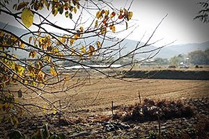
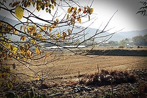
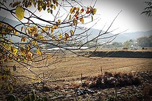

크기를 지정하지 않은 단일 이미지 삽입
alt="이미지의 설명"/>
크기를 지정한 단일 이미지 삽입
여러 요소에 대한 설명

우리나라의 사계절
- 새싹이 피어나는 이른 아침, 선유도 공원의 푸른 여름, 추수가 끝난 시골 풍경, 눈 쌓인 공원
 alt="이미지의 설명"/>
alt="이미지의 설명"/>
alt="이미지의 설명"/>
alt="이미지의 설명"/>


 
